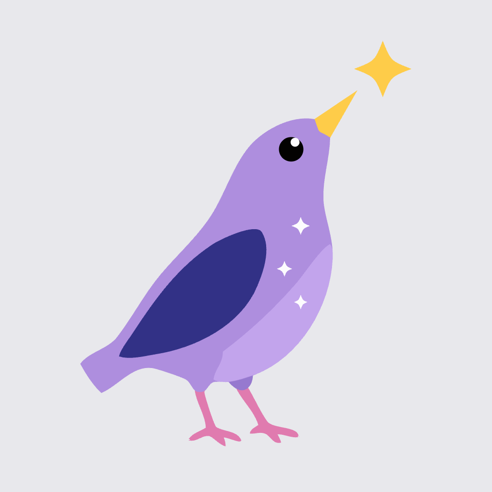
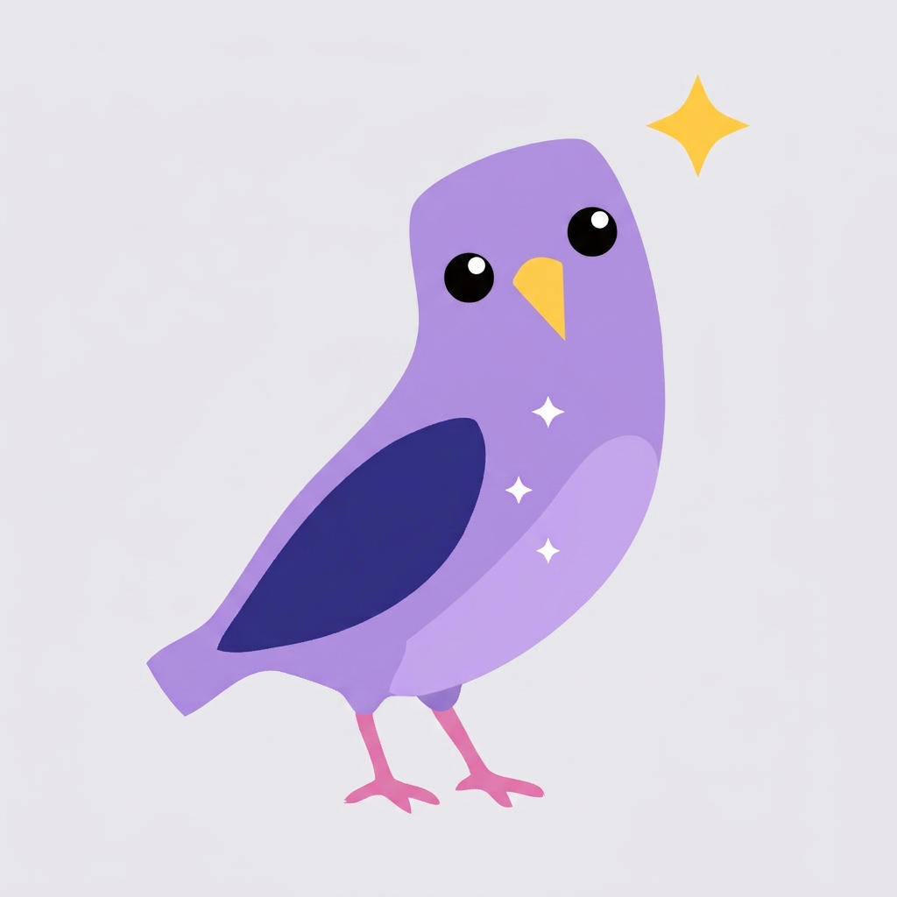
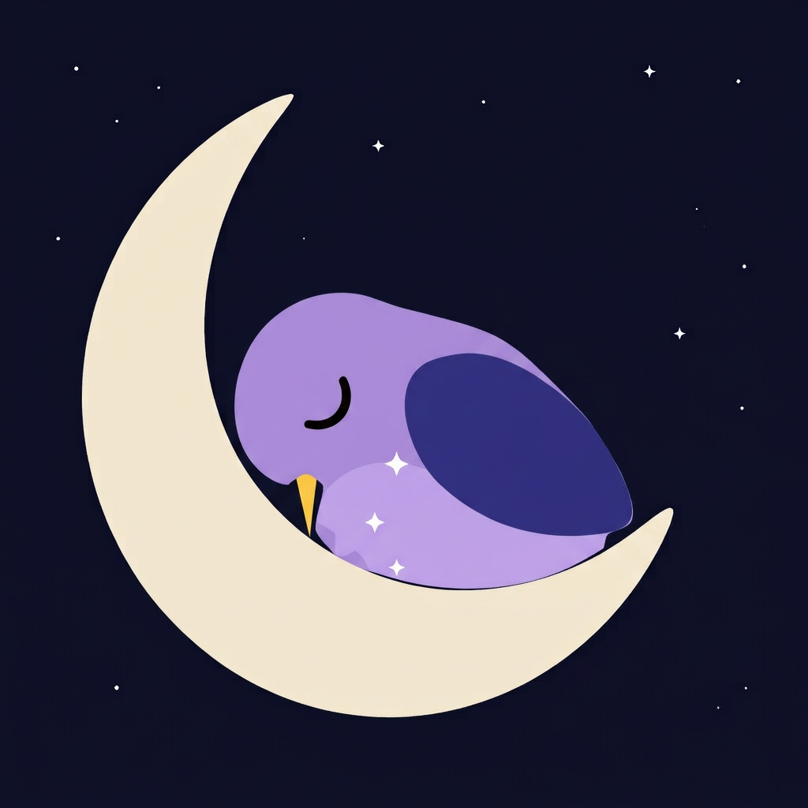

Weave poses from the OG
This time the AI started from a picture of the OG itself (plus your pose picture), instead of from a written description. These are pictures, not SVG yet: if you like one, I'll trace it faithfully, the way I traced the OG.

OG
The picture Weave was given.
About page: curious tilt

Lost in space: asleep on the Moon
